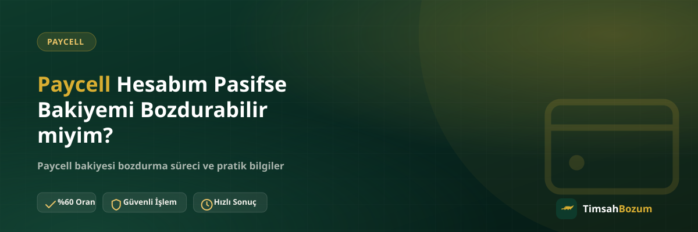

Paycell uygulamasını bir süre açmayan ya da hattını değiştiren kullanıcılar, hesaplarının "pasif" göründüğünü fark ettiğinde genelde aynı soruyu sorar: bu durumda bakiyemi bozdurabilir miyim, yoksa önce hesabı mı aktifleştirmem gerekiyor? Bu yazıda pasif hesap durumunun bozum sürecini nasıl etkilediğini, neyin önemli olup neyin olmadığını anlatıyoruz.
Paycell Hesabı Neden Pasif Duruma Düşer?
Bir Paycell hesabı genelde uzun süre kullanılmaması, bağlı olduğu hattın iptal edilmesi veya numara taşıma gibi durumlarda pasif duruma geçebilir. Bu, hesabın tamamen silindiği anlamına gelmez; sadece belirli işlemler için ekstra bir doğrulama veya yeniden etkinleştirme adımı gerekebileceği anlamına gelir. Pasifliğin tam olarak hangi koşulda tetiklendiği Paycell'in kendi politikasına bağlıdır, bu yüzden net bilgiye ihtiyacın varsa uygulamanın kendi yardım bölümüne bakmak en doğrusu.
Pasif Hesapta Bakiye Kaybolur mu?
Hayır, pasiflik genelde hesaptaki bakiyeyi silmez; bakiye uygulamada görünmeye devam eder. Pasiflik daha çok hesabın işlem yapma kapasitesiyle ilgilidir. Yani uygulamayı açtığında bakiyeni hâlâ görebiliyorsan, bu bilgi bozum talebi için yeterli bir başlangıç noktasıdır.
Pasif Hesap ile Aktif Hesap Arasındaki Fark Bozum İçin Önemli mi?
Bozum tarafında asıl önem taşıyan, ekranda görünen güncel bakiye tutarı ve bu tutarı gösteren okunaklı bir ekran görüntüsü. Hesabının aktif ya da pasif olarak etiketlenmesi, bu bilgiyi paylaşmanı engellemiyor. Elbette hesabın tamamen kapatılmış veya bakiyenin sıfırlanmış olduğu bir durum farklıdır; böyle bir şüphen varsa güncel ekran görüntüsünü paylaşmadan önce uygulamadan tekrar kontrol etmen faydalı olur.
Pasif Paycell Hesabından Bozum Talebi Nasıl Değerlendirilir?
TimsahBozum'da bozum talebi, hesabın durumuna değil, paylaşılan bilgiye göre değerlendirilir. Pasif bir hesaptan gelen talep de aktif bir hesaptan gelen talep gibi aynı adımlardan geçer: güncel bakiyeyi gösteren bir ekran görüntüsü paylaşılır, oran teyit edilir ve onay sonrası süreç ilerler. Paycell bozdurma sayfamızda bu sürecin genel işleyişini daha ayrıntılı bulabilirsin.
Hangi Bilgiyi Paylaşmalıyım?
Pasif hesaptan bozum talebinde bulunurken de gereken bilgi değişmez: uygulamadaki güncel bakiyeni gösteren, tutarın net okunduğu bir ekran görüntüsü. Eski bir ekran görüntüsü veya tarihi belirsiz bir görsel paylaşmak, hesabın aktif olup olmamasından bağımsız olarak süreci geciktirir.
Hesabıma Erişim Vermem Gerekir mi?
Hayır. Hesabın pasif ya da aktif olmasından bağımsız olarak, bozum sürecinde hesabına erişim verilmesi istenmez. Uygulama şifresi, SMS doğrulama kodu veya benzeri bir bilgi asla talep edilmez; böyle bir istekle karşılaşırsan bunun resmi süreçle bir ilgisi olmadığını bilmelisin.
Hesabımı Yeniden Aktif Hale Getirmem Gerekir mi?
Bozum talebinde bulunmak için hesabı önceden yeniden aktifleştirmen gerekmiyor. Hesabın etkinleştirilmesi Paycell'in kendi uygulaması veya ilgili operatör kanalları üzerinden yürüyen, TimsahBozum sürecinin dışında kalan bir konu. Bizim tarafımızda tek ihtiyaç, bakiyenin güncel durumunu gösteren bir görsel.
Bozum İçin Hesabın Aktif Olması Şart mı?
Hayır, şart değil. Ekranında güncel bakiyeni görebildiğin sürece, hesabın etiketinin aktif veya pasif olması talebi engellemez. Tek istisna, hesaba hiç erişemediğin veya bakiyenin uygulamada hiç görünmediği bir durumdur; bu gibi bir sorunla karşılaşırsan önce Paycell'in kendi destek kanalından durumu netleştirmen gerekir.
Numara Değişikliği veya Hat İptali Durumunda Bakiyem Ne Olur?
Hattını başka bir operatöre taşıdığında Paycell hesabı genelde yeni hattınla birlikte devam eder ve bakiyene uygulama üzerinden erişebilirsin. Ama hattını tamamen iptal ettiysen hesabın durumu Paycell'in kendi politikasına göre değişebilir; bu konuda en net bilgiyi uygulamanın kendisinden veya Paycell'in resmi destek kanallarından almak gerekir. TimsahBozum olarak bizim tarafımızda değişen tek şey, hesabına hâlâ erişip erişemediğin.
Hesabıma Hiç Giriş Yapamıyorsam Ne Yapmalıyım?
Uygulamaya hiç giremediğin veya bakiyeyi hiçbir şekilde göremediğin bir durumdaysan, bozum talebinde bulunmadan önce bu sorunu Paycell'in kendi destek kanalından çözmen gerekir. Bozum süreci ekranda görünen güncel bir bakiyeye dayandığı için, bu görüntüyü paylaşamadığın sürece talep değerlendirilemez. Erişimini yeniden sağladıktan sonra güncel ekran görüntünle WhatsApp'tan bize yazabilirsin.
Pasif Hesapta Bozum Süreci Nasıl İşler?
Süreç, aktif hesaplardaki işleyişle aynı şekilde WhatsApp üzerinden yürür. Resmi hattımız olan +90 543 887 21 71'e yazarsın, güncel bakiyeni gösteren ekran görüntünü paylaşırsın, oranı teyit edersin ve onayından sonra ödeme WhatsApp üzerinden görüşülen yöntemle yapılır. Üyelik, form doldurma veya kimlik belgesi istenmez.
Oran Pasif Hesaplarda Farklı mı?
Hayır. Oran, hesabın aktif veya pasif olmasına göre değişmez; hizmetin kendisine göre belirlenir. Güncel oranı işlem öncesinde WhatsApp'tan teyit etmek, hesabının durumundan bağımsız olarak her zaman önerilen bir adımdır.
Dikkat Edilmesi Gereken Noktalar
Pasif bir hesaptan bozum yaparken en sık karşılaşılan sorun, ekran görüntüsünün güncel olmaması veya bakiyenin net görünmemesi. Bunun dışında hesabın pasif olması herhangi bir ekstra adım gerektirmez. Bilgini yalnızca resmi WhatsApp hattımızdan paylaşman, başka bir numaradan veya platformdan gelen taleplere bilgi vermemen her zaman geçerli bir güvenlik kuralıdır. Çalışma saatlerimiz her gün 10:00 ile 03:00 arasıdır; bu saatler dışında yazdığın mesaj kaybolmaz, hat açıldığında yanıtlanır.
Paycell hesabın pasif görünüyor ama bakiyeni değerlendirmek istiyorsan, güncel ekran görüntünle WhatsApp hattımıza yazabilirsin.
İlgili Yazılar
- Paycell Bakiyemi Nereden Görebilirim?
- Paycell Hediye Bakiyesi Bozdurulur mu?
- Turkcell Hattı Olmayanlar Paycell Bakiyesi Bozdurabilir mi?